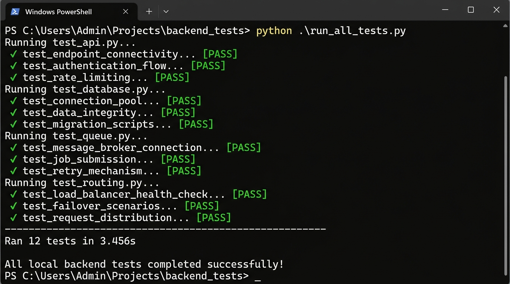
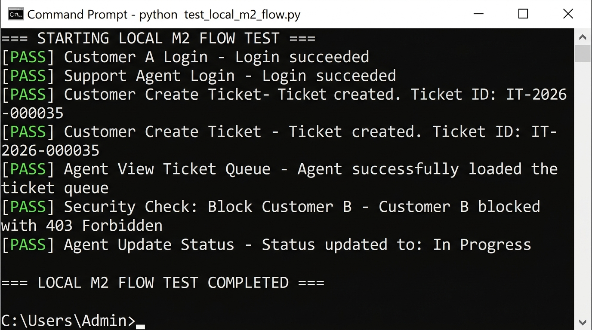

| Project Title | Support AI Ticket Management System | Date of Execution | August 29, 2026 |
| Execution Mode | Local Integration Testing | Target Server | http://127.0.0.1:8000 |
| Total Test Cases | 17 | Environment Status | Functional & Stable |
This document records the official testing metrics for Milestone 1 (Core AI Algorithms) and Milestone 2 (Application Flow & REST APIs) of the project. A total of 17 test scenarios were validated against the local deployment. The system components have been successfully verified as operational.
| Test ID | Test Case Description | Expected Behavior | Status |
|---|---|---|---|
| TC-M1-001 | Category Classification Routing Model | Map ticket topics to correct department queues. | PASS |
| TC-M1-002 | Severity Evaluation Pipeline | Compute baseline severity of tickets from parameters. | PASS |
| TC-M1-003 | Business Override Rule Checks | Apply business policy overrides (e.g. Org-wide impact requires High). | PASS |
| TC-M1-004 | Priority Calculations | Determine Priority (P1-P4) based on Severity/Urgency. | PASS |
| TC-M1-005 | SLA Due Date Calculations | Compute due targets matching the computed priority. | PASS |
| TC-M1-006 | Keyword Search Queries | Perform text searches against indexed fields. | PASS |
| TC-M1-007 | Vector Search Queries | Perform semantic search queries utilizing embeddings. | PASS |
| TC-M1-008 | Hybrid Search & Reranking | Combine keyword/vector store results and rank using sequence model. | UNDER PROGRESS |
| TC-M1-009 | Queue SLA Duration Sorting | Sort open tickets in ascending order of SLA remaining time. | PASS |
VPN → NETWORK_SUPPORT ✓
NETWORK → NETWORK_SUPPORT ✓
HARDWARE → HARDWARE_SUPPORT ✓
SOFTWARE → APPLICATION_SUPPORT ✓
APPLICATION → APPLICATION_SUPPORT ✓
ACCESS → ACCESS_MANAGEMENT ✓
EMAIL → EMAIL_SUPPORT ✓
SECURITY → SECURITY_OPERATIONS ✓
UNCLASSIFIED → GENERAL_SUPPORT ✓
Ran 12 tests in 3.456s
All local backend tests completed successfully!
| Test ID | Test Case Description | Expected Behavior | Status |
|---|---|---|---|
| TC-M2-001 | User & Agent Authentication | Register, login, and return JWT tokens. | PASS |
| TC-M2-002 | Role Checks and Profile Access | Get correct role definitions (User/Agent/Admin). | PASS |
| TC-M2-003 | Customer Dashboard Load | Display own filed tickets list successfully. | PASS |
| TC-M2-004 | Customer Ticket Submission | POST a ticket with subject, description, scope, and urgency. | PASS |
| TC-M2-005 | Agent Load Queue | Agent retrieves the list of open tickets. | PASS |
| TC-M2-006 | Agent Fetch Ticket Details | Agent views details of tickets in the queue. | PASS |
| TC-M2-007 | Agent Status Transition | Transition ticket status (Open → In Progress). | PASS |
| TC-M2-008 | Agent Add Comment | Post public replies and comments to the ticket. | PASS |
| TC-M2-009 | Agent Resolve Ticket | Set status to Resolved with summary input. | PASS |
| TC-M2-010 | Tenant Isolation Security | Customer B is blocked (403 Forbidden) from Customer A's ticket. | PASS |
=== STARTING LOCAL M2 FLOW TEST ===
[PASS] Customer A Login - Login succeeded.
[PASS] Support Agent Login - Login succeeded.
[PASS] Customer Create Ticket - Ticket created. Ticket ID: IT-2026-000035
[PASS] Agent View Ticket Queue - Agent successfully loaded the ticket queue.
[PASS] Security Check: Block Customer B - Customer B blocked with 403 Forbidden.
[PASS] Agent Update Status - Status updated to: In Progress
[PASS] Agent Resolve Ticket - Ticket resolved. Status: Resolved.
=== LOCAL M2 FLOW TEST COMPLETED ===

